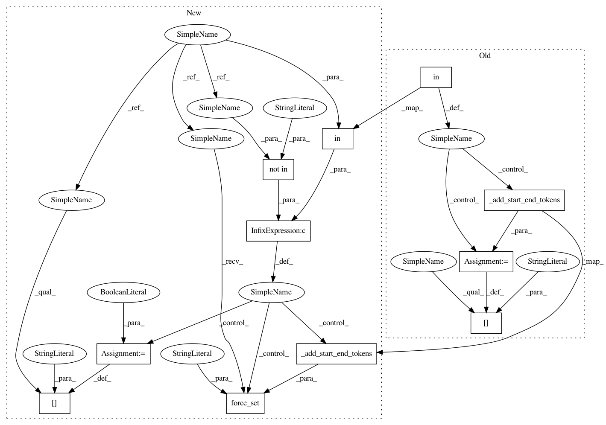

7f2f766be0b1b2d77d02621ec9f64ea9104fade0,parlai/agents/transformer/polyencoder.py,PolyencoderAgent,_set_text_vec,#PolyencoderAgent#,100
Before Change
Add the start and end token to the text.
obs = super()._set_text_vec(*args, **kwargs)
if "text_vec" in obs:
obs["text_vec"] = self._add_start_end_tokens(obs["text_vec"], True, True)
def vectorize_fixed_candidates(self, *args, **kwargs):
Add the start and end token when computing the candidate encodings
in interactive mode.
After Change
def _set_text_vec(self, *args, **kwargs):
Add the start and end token to the text.
obs = super()._set_text_vec(*args, **kwargs)
if "text_vec" in obs and "added_start_end_tokens" not in obs:
obs.force_set(
"text_vec", self._add_start_end_tokens(obs["text_vec"], True, True)
)
obs["added_start_end_tokens"] = True
return obs
def vectorize_fixed_candidates(self, *args, **kwargs):
Add the start and end token when computing the candidate encodings
In pattern: SUPERPATTERN
Frequency: 3
Non-data size: 11
Instances
Project Name: facebookresearch/ParlAI
Commit Name: 7f2f766be0b1b2d77d02621ec9f64ea9104fade0
Time: 2019-08-06
Author: edinan@fb.com
File Name: parlai/agents/transformer/polyencoder.py
Class Name: PolyencoderAgent
Method Name: _set_text_vec
Project Name: facebookresearch/ParlAI
Commit Name: 7f2f766be0b1b2d77d02621ec9f64ea9104fade0
Time: 2019-08-06
Author: edinan@fb.com
File Name: parlai/agents/transformer/biencoder.py
Class Name: BiencoderAgent
Method Name: _set_text_vec
Project Name: facebookresearch/ParlAI
Commit Name: 7f2f766be0b1b2d77d02621ec9f64ea9104fade0
Time: 2019-08-06
Author: edinan@fb.com
File Name: parlai/agents/transformer/crossencoder.py
Class Name: CrossencoderAgent
Method Name: _set_text_vec